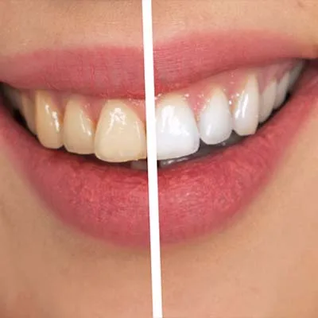
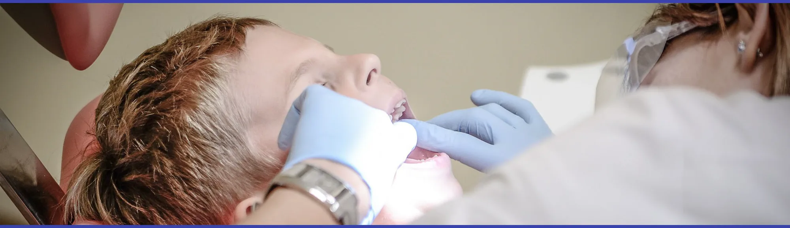
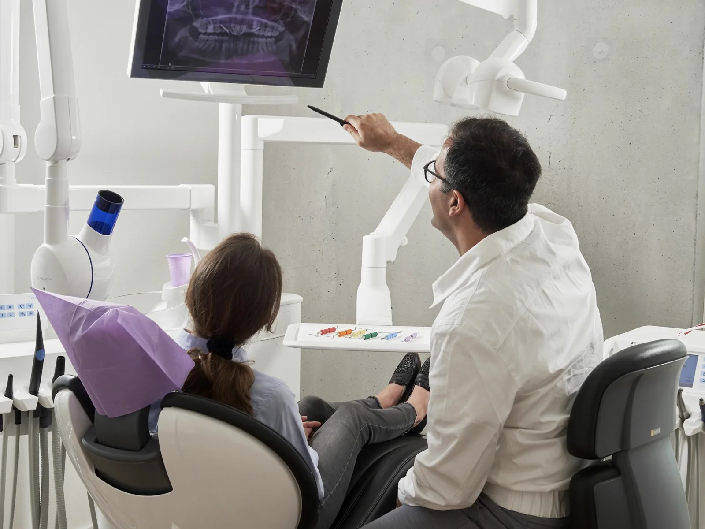
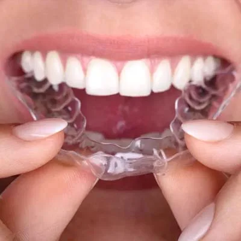
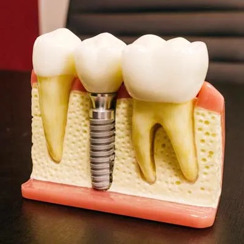
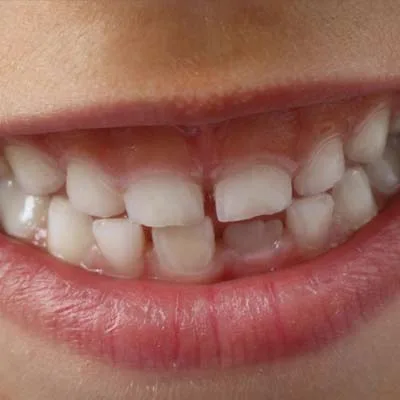
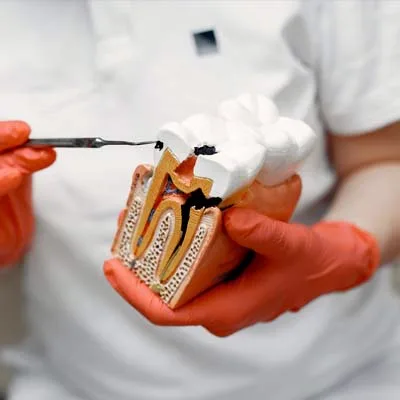
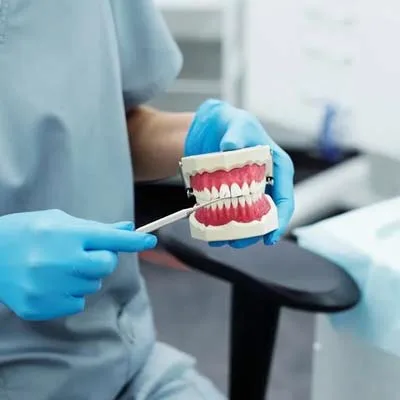

Blanqueamiento dental: qué esperar y qué no
Resolvemos las dudas más habituales sobre el blanqueamiento: cuánto dura, si daña el esmalte y por qué conviene hacerlo siempre bajo supervisión profesional.

Pequeños hábitos que marcan una gran diferencia. Te contamos lo que de verdad importa sobre tu salud bucodental, sin tecnicismos.

La mayoría de los tratamientos complejos empiezan como un problema pequeño que no dio síntomas. Una revisión periódica permite detectar caries, problemas de encías o desgastes a tiempo, cuando la solución es sencilla. Te explicamos qué revisamos en cada visita y cómo la prevención es, casi siempre, el tratamiento más barato.
Pide tu revisión
Resolvemos las dudas más habituales sobre el blanqueamiento: cuánto dura, si daña el esmalte y por qué conviene hacerlo siempre bajo supervisión profesional.

Discreta, cómoda y removible. Te contamos para quién es adecuada la ortodoncia transparente y cómo es el día a día con ella.

Desde la primera valoración hasta la corona definitiva. Explicamos por qué es un proceso sencillo, indoloro y seguro, y cuánto suele durar.

Cuándo llevarlo por primera vez y cómo conseguir que sea una experiencia positiva que cree una buena relación con el dentista para toda la vida.

La técnica importa más que la fuerza. Repasamos los fallos más comunes al cepillarse y el papel real de la seda dental y los enjuagues.

Cada boca es distinta. Comparamos las opciones para rehabilitar tu dentadura según comodidad, mantenimiento y resultado estético.
¿Tienes una duda concreta sobre tu salud dental? Estaremos encantados de resolverla en persona.
Habla con nosotros · 943 638 545